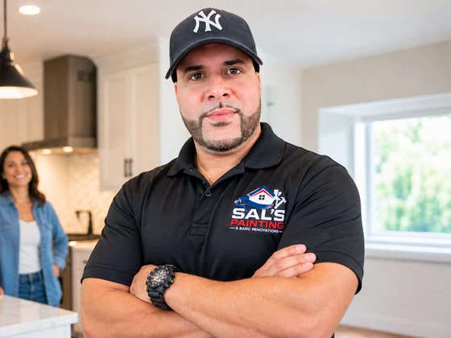

Sal's Painting Workmanship Guarantee
Sal stands behind the prep, application, and cleanup on every job.
What the guarantee covers
If something isn't right after the job — missed spot, rough line, or application issue — call Sal at (727) 644-7674. Workmanship problems get corrected. That's the same person who quoted the job, not a warranty hotline.

What it doesn't cover
- Normal wear and tear after the job is complete
- Damage from moisture, leaks, or structural movement after painting
- Color change requests after approval
- Pre-existing conditions that were noted before work began
Before work starts
Sal walks the scope with you — prep, coats, sheen, and timing — so expectations are clear before the first drop cloth goes down. Questions? Ask before booking, not after.
Guarantee on interior and exterior painting
Whether the job is a single accent wall in Edison, a whole-home interior repaint in Woodbridge, or exterior siding in Perth Amboy, the same standard applies: proper prep, clean application, and correction if workmanship misses the mark. Drywall repair integrated into paint jobs is covered as part of the agreed scope.
Deck staining and renovation finish work
Deck and fence staining is guaranteed on application and prep — not on wood rot discovered after coating. Renovation finish jobs cover the surfaces listed in your written quote; structural or plumbing issues stay outside paint scope.
Quality on every job
- Scope in writing — Surfaces, prep, and coats agreed upfront.
- Walkthrough — Review lines, coverage, and cleanup together.
- Follow-up — Same phone number if touch-up is needed.
Service areas covered by the guarantee
All Middlesex County towns Sal serves — Carteret, Edison, Woodbridge, Rahway, and every city on the service area map. Pricing · Gallery · Contact Sal · (727) 644-7674 · About Sal